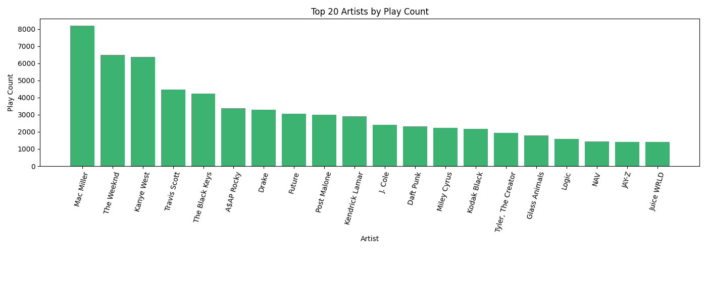
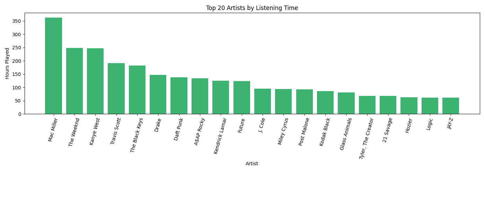
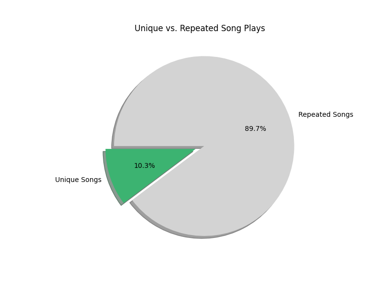
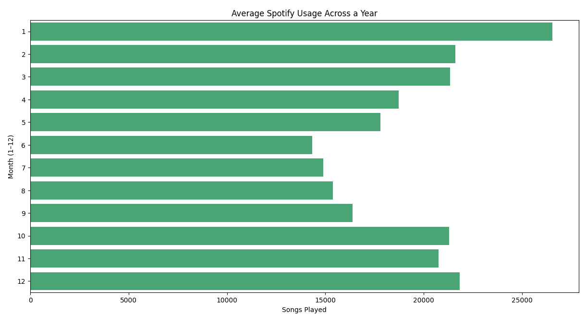
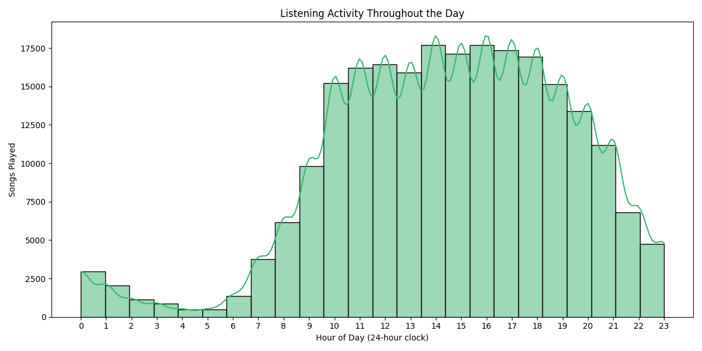
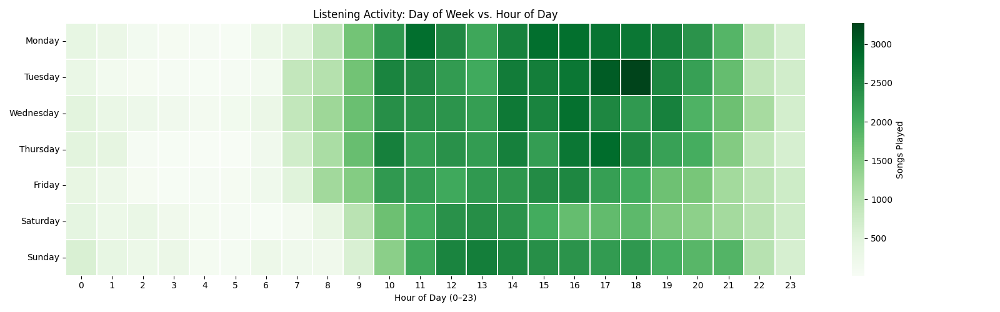
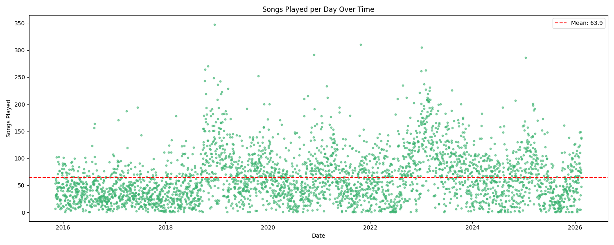
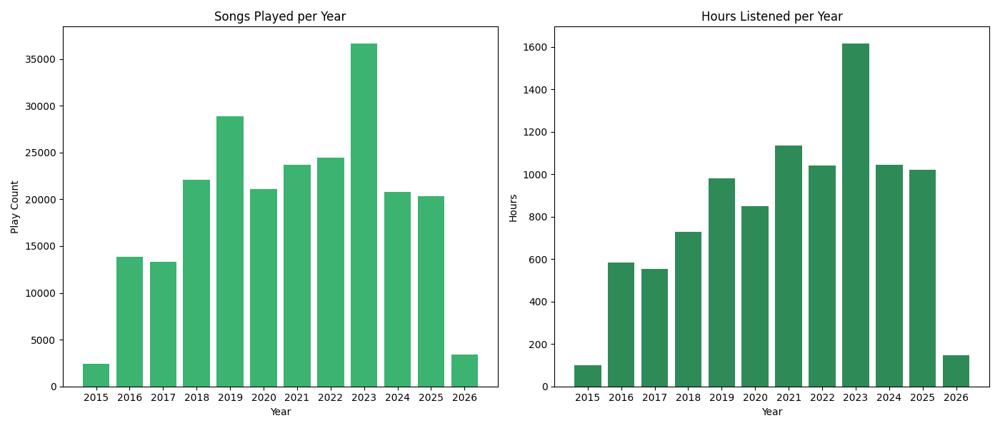

Heads up, this article was creating using AI tools!
What Is Spotify Scraper?
Spotify Scraper is a Python CLI tool that turns your raw Spotify streaming history into visual insights. You point it at the JSON files Spotify gives you, and it produces charts, stats, and breakdowns of your listening habits — everything from your most-played artists to what time of day you listen the most.
The tool is built around an interactive numbered menu with 25+ options covering three areas: streaming history analysis (charts and graphs of your listening data), playlist management (view, export, and diff your playlists), and liked songs analysis (cross-reference your library with what you actually stream). Under the hood it uses pandas for data processing and matplotlib/seaborn for visualization.
Getting Your Data from Spotify
Before you can use this tool, you need to request your data from Spotify. Go to your Spotify Privacy Settings and request the Extended Streaming History — this is different from the basic "Account Data" download. The extended history includes every single stream you've ever played on the platform, with timestamps, track names, artist names, and milliseconds played. Spotify says it can take up to 30 days to prepare, but it usually arrives within a week or two. You'll get an email when it's ready, and the download will contain a set of endsong_*.json files. For playlist and library features, you'll also want the standard Account Data export which includes Playlist1.json and YourLibrary.json.
Analysis Breakdown
Here's a walkthrough of some of the visualizations the tool produces.
Top Artists by Play Count

This bar chart ranks your most-played artists by raw play count — every time a song by that artist started playing counts as one play. It's a straightforward look at who dominates your listening. You can configure how many artists to show (default is 20).
Top Artists by Listening Time

Same idea, but ranked by total hours spent listening instead of play count. This can tell a different story — an artist whose songs you let play all the way through will rank higher here than one you skip after 30 seconds, even if the skip-heavy artist has more raw plays.
Unique vs. Repeated Songs

A pie chart showing what percentage of your total plays were unique songs versus repeat listens. A low unique percentage means you tend to replay the same tracks over and over. A high percentage means you're constantly exploring new music. Most people fall somewhere in the middle.
Listening Distribution Across the Year

This horizontal bar chart aggregates all your streams by calendar month (January through December), across all years in your data. It reveals seasonal patterns — maybe you listen more during winter months, or there's a summer slump when you're outdoors more. It's an aggregate view, so a month with data from multiple years will naturally appear larger.
Listening Activity Throughout the Day

A histogram with a KDE (kernel density estimate) curve showing when during the day you listen to music, broken down by hour (0-23). Timestamps are converted to your local timezone. You can spot your peak listening hours at a glance — late-night listening sessions, morning commute habits, or afternoon work playlists all show up clearly here.
Day-of-Week x Hour Heatmap

A heatmap with days of the week on the vertical axis and hours of the day on the horizontal axis. The color intensity represents how many songs you played during that specific day-hour combination. This is one of the most revealing charts — it shows not just when you listen, but how your listening patterns differ between weekdays and weekends. Dark green cells are your peak listening slots.
Songs Played per Day Over Time

A scatter plot where each dot represents a single day, plotted over time on the x-axis with the number of songs played that day on the y-axis. A red dashed line shows your daily average. This chart is great for spotting outlier days (a long road trip, a music binge, a day you left Spotify on shuffle for hours) and for seeing how your overall listening volume has trended over the months and years.
Year-Over-Year Comparison

A side-by-side pair of bar charts comparing your listening across years. The left chart shows total play count per year, and the right shows total hours listened per year. Together they give you a high-level view of how your Spotify usage has grown or declined over time. A year with a high play count but relatively low hours might mean you were skipping a lot; the reverse could mean you were deep into long albums or podcasts.